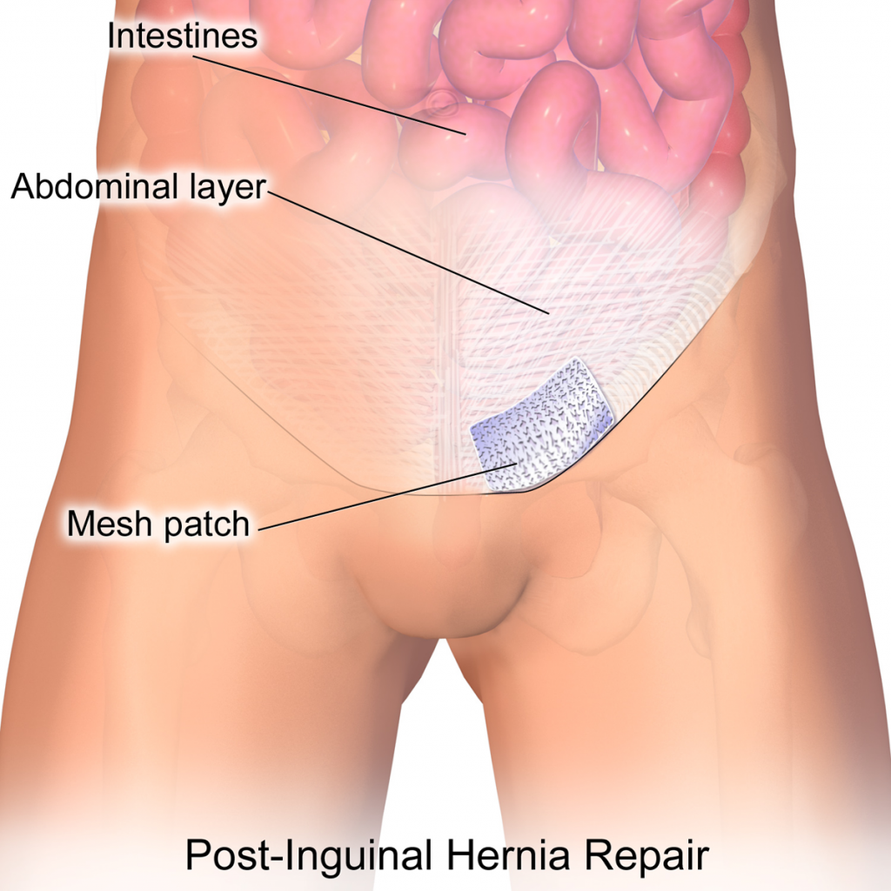
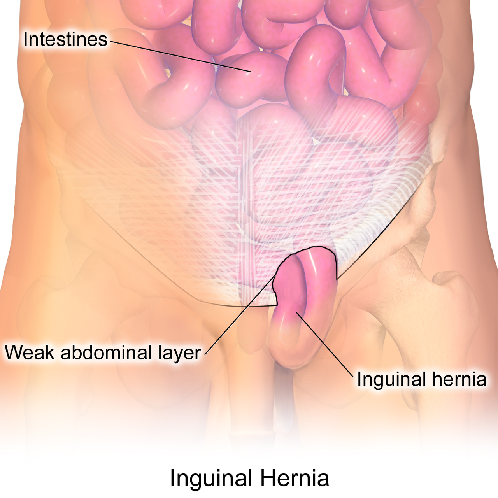
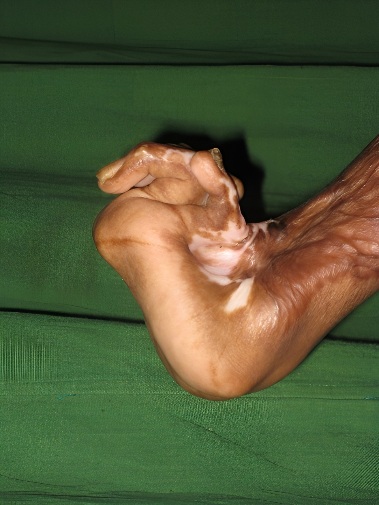
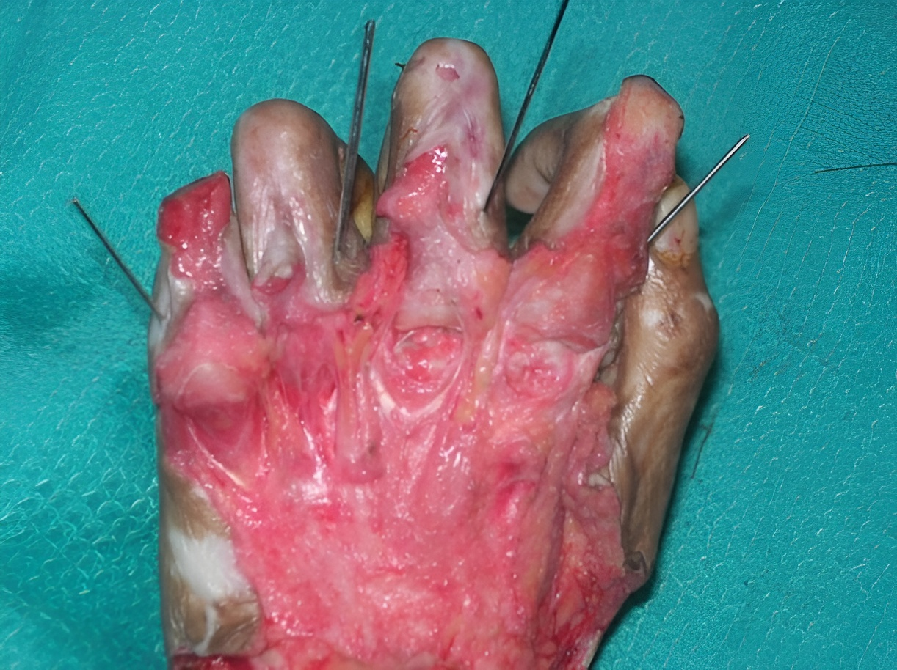
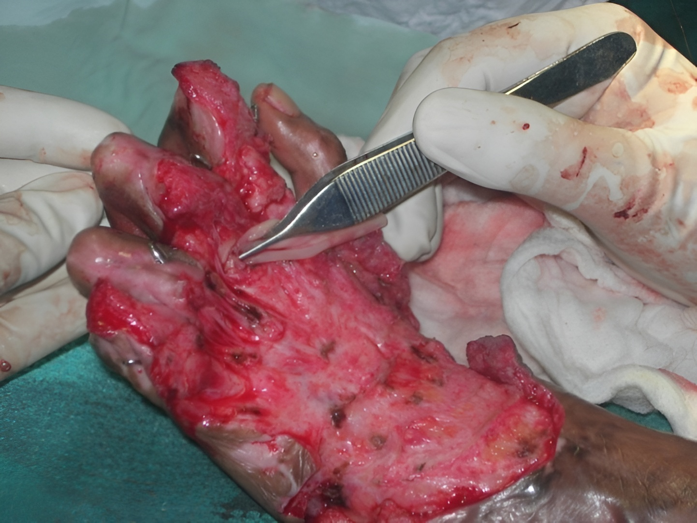
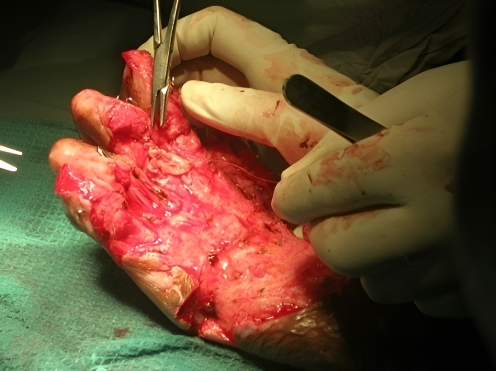

Soft Tissue Reinforcement
Implantable, bioresorbable, tissue regenerative sterile Type-I Collagen matrix. Designed for reconstructive surgery, chronic wounds, diabetic ulcers, burns and soft tissue repair.
Download Brochure
From component separation in open abdominal repair to a two-step rescue in strangulated hernia — Surgicoll-Mesh reinforces the site as native tissue regrows through it.

.jpg)
An open incision is made at the hernia site and protruded tissue is pushed back into place. For larger defects, a component separation procedure may free the abdominal wall muscles before Surgicoll-Mesh is placed to reinforce the damaged site and reduce recurrence. The skin is typically closed with dissolvable stitches and glue.


Several small incisions are made away from the hernia site. A laparoscope — a thin, lighted tube with a camera — guides the surgery through one of the openings. Surgicoll-Mesh may be inserted through the same access points to strengthen the weakened abdominal wall with minimal disruption to surrounding tissue.

An approximate 10-cm incision is made in the groin. Once exposed, the hernia sac is pushed back into the abdominal cavity or excised, and the abdominal wall is then reinforced with Surgicoll-mesh to restore structural integrity at the weakened layer.

The hernia sac is removed and Surgicoll-Mesh is placed over the site, attached using sutures to the stronger surrounding tissue. The mesh extends 3 to 4 cm beyond the edges of the hernia, and the umbilicus is fixed back to the muscle — suited to both open and laparoscopic technique.

Surgery is the only treatment option. Local or general anesthesia is selected based on the surgical modality, and the procedure follows a two-step sequence to release trapped tissue before the site is rebuilt.
Gentle pressure releases the trapped tissue back into the abdominal cavity, clearing any twist or volvulus.
The hernia is repaired with Surgicoll-Mesh to prevent recurrence, manage complications, and strengthen the tissue.

Surgicoll-Mesh® offers superior advantages over synthetic and biological collagen products for the treatment of pelvic floor reconstruction including vaginal, urethral, bladder, and rectal prolapse. It acts as a scaffold that can be naturally bioabsorbed and progressively integrated with new host tissue.

Weak pelvic muscles and ligaments may cause organs to shift and bulge into the vagina. Surgicoll-Mesh® reinforces the weakened vaginal wall and can be implanted through abdominal surgery using mesh support.

A urethrocele occurs when tissues around the urethra sag downward into the vagina. Surgicoll-Mesh® urethral slings help support the bladder neck and urethra through a midurethral sling procedure.

A cystocele occurs when the bladder presses against the vaginal wall. Surgicoll-Mesh® urethral slings help hold the urethra in the correct position for improved support.

Uterine prolapse happens when pelvic muscles weaken and can no longer support the uterus. Surgicoll-Mesh® helps restore natural support by connecting the uterus to stronger tissue.

An enterocele occurs when the small bowel bulges into the vaginal wall due to weakened pelvic support tissues. Surgicol-Mesh helps reinforce the affected area, providing support and promoting tissue integration.

Rectocele is the bulging of the rectum into the vaginal wall. Surgicoll-Mesh® is placed behind the rectum and fixed to the sacrum for enhanced structural support.
Excellent coverage over exposed bones and joints can be achieved faster through Surgicoll-Mesh®'s nanotechnological approach clinically proven for reconstruction of complex wounds, obviating the need for flap cover.
Surgicoll-Mesh® offers clear advantages over synthetic and other collagen products for Reconstructive surgeries. It acts as a scaffold that can be naturally and progressively integrated, remodeled and eventually replaced by functional host tissue.

Hand deformation before surgery complex wound with exposed structures

Surgicoll-Mesh® applied to exposed bones and joints

Active granulation tissue formation and scaffold integration

90% healing achieved without flap coverage
Surgicoll-Mesh® and Hemocoll® together offer disruptive technology solutions for eminent general surgeons covering anastomosis reinforcement and complex abdominal wall reconstruction.
Surgicoll-Mesh® can be used in reinforcing gastrointestinal anastomosis. This product fulfils the clinical requirement for offering essential physical support. As the product gradually degrades over time, it prompts the growth of new tissue, thereby enhancing the strength of the treated area.
This application is particularly valuable following bowel resection procedures where end-to-end reattachment requires additional mechanical support during the healing phase, reducing the risk of anastomotic leakage and associated complications.
A peer-reviewed case series published in the Journal of Clinical and Diagnostic Research (September 2024) demonstrated excellent outcomes in three patients with infected posthernioplasty abdominal wounds treated using Surgicoll-Mesh®. All cases showed resolution of infection, effective wound healing, and no hernia recurrence at one-year follow-up.


Choose from our wide range of standard sizes (in cm). Custom sizes available on request.